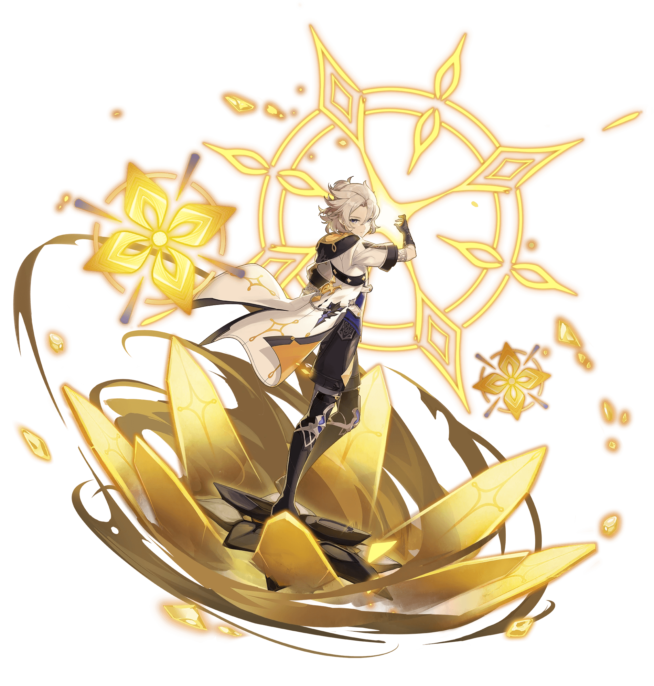
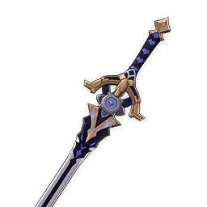
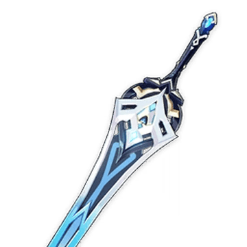
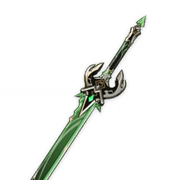
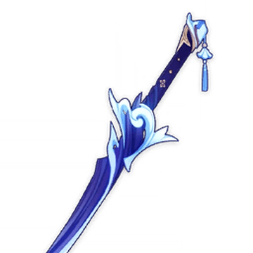
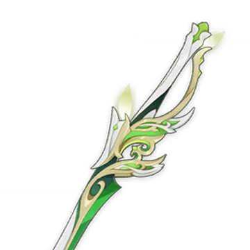
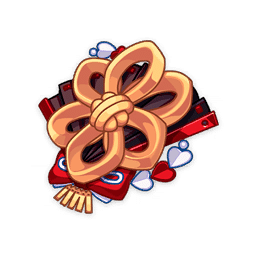
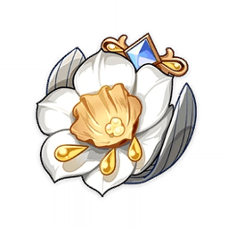
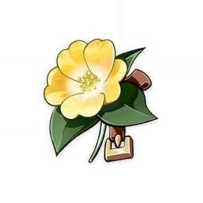

Albedo
Kreideprinz
Voice:
English: Khoi Dao
Chinese: Mace
Japanese: Nojima Kenji (野島 健児)
Korean: Kim Myung-jun (김명준)
Birthday
9/13
Affiliation
Knights of Favonius
Vision
Geo
Constellation
Princeps Cretaceus
A genius known as the Kreideprinz, he is the Chief Alchemist and Captain of the Investigation Team of the Knights of Favonius.
Weapon |
Weapon Information |
Notes | |
|---|---|---|---|
1st |
Cinnabar Spindle |
Base ATK: 454Bonus Stat: DEF 69.0%Skill Effect: Elemental Skill DMG is increased by 40% of DEF. The effect will be triggered no more than once every 1.5s and will be cleared 0.1s after the Elemental Skill deals DMG. |
An event-exclusive 4-star sword that is Albedo's best weapon, since albedo is the only sword-user with an elemental skill that scales with DEF. |
2nd |
 Harbinger of Dawn |
Base ATK: 401Bonus Stat: CRIT DMG 46.9%Skill Effect: When HP is above 90%, increases CRIT Rate by 14%. |
An easily obtainable weapon and is his best F2P option. Having a team healer is definitely recommended to keep Albedo's HP above 90%. |
3rd |
Wolf-Fang |
Base ATK: 510Bonus Stat: CRIT Rate 27.6%Skill Effect: DMG dealt by Elemental Skill and Elemental Burst is increased by 16%. When an Elemental Skill hits an opponent, its CRIT Rate will be increased by 2%. When an Elemental Burst hits an opponent, its CRIT Rate will be increased by 2%. Both of these effects last 10s separately, have 4 max stacks, and can be triggered once every 0.1s. |
Although slightly better than Harbinger of Dawn at R5 (which will cost you about $50), the difference is small. |
4th |
Primordial Jade Cutter |
Base ATK: 542Bonus Stat: CRIT Rate 44.1%Skill Effect: HP increased by 20%. Additionally, provides an ATK Bonus based on 1.2% of the wielder’s Max HP. |
|
5th |
Haran Geppaku Futsu |
Base ATK: 608Bonus Stat: CRIT Rate 33.1%Skill Effect: Obtain 12% All Elemental DMG Bonus. When other nearby party members use Elemental Skills, the character equipping this weapon will gain 1 Wavespike stack. Max 2 stacks. This effect can be triggered once every 0.3s. When the character equipping this weapon uses an Elemental Skill, all stacks of Wavespike will be consumed to gain Rippling Upheaval: each stack of Wavespike consumed will increase Normal Attack DMG by 20% for 8s. |
A good alternative to Harbinger of Dawn without needing to stay above 90% HP, though not recommended to pull for them just for Albedo. |
Light of Foliar Incision |
Base ATK: 542Bonus Stat: CRIT DMG 88.2%Skill Effect: CRIT Rate is increased by 4%. After Normal Attacks deal Elemental DMG, the Foliar Incision effect will be obtained, increasing DMG dealt by Normal Attacks and Elemental Skills by 120% of Elemental Mastery. This effect will disappear after 28 DMG instances or 12s. You can obtain Foliar Incision once every 12s. |
Geo Sub DPS
| Main Stats | Sands: |
|
|---|---|---|
Goblet: |
||
Circlet: |
||
| Substats | DEF%, CRIT Rate, CRIT DMG | |
Best Artifacts
| 1st |  Husk of Opulent Dreams x4 |
2-PC: DEF +30% 4-PC: A character equipped with this Artifact set will obtain the Curiosity effect in the following conditions: When on the field, the character gains 1 stack after hitting an opponent with a Geo attack, triggering a maximum of once every 0.3s. When off the field, the character gains 1 stack every 3s. Curiosity can stack up to 4 times, each providing 6% DEF and a 6% Geo DMG Bonus. When 6 seconds pass without gaining a Curiosity stack, 1 stack is lost. |
Albedo will gain Curiosity when he casts his E (Transient Blossoms). Additionally this set buffs Albedo's DEF and Geo DMG, both stats that increase his Elemental Skill DMG. |
|---|---|---|---|
|  Golden Troupe x4 |
2-PC: Elemental Skill DMG +20% 4-PC: Increases Elemental Skill DMG by 25%. Additionally when not on the field, Elemental Skill DMG will be further increased by 25%. This effect will be cleared 2s after taking the field. |
The 4pc effect would give Albedo a 70% Skill DMG, and puts it on par with a 4pc Husk. | |
| 2nd | Husk of Opulent Dreams x2 Golden Troupe x2 |
2-PC: DEF +30% | Although a 4pc Husk or Golden Troupe set is recommended, this is a good backup option if you don't have 4 good pieces to make a set. |
| 2-PC: Elemental Skill DMG +20% |
| Rating | Constellation Effect / Merits | |
|---|---|---|
| C1 | Flower of EdenTransient Blossoms generated by Albedo's Abiogenesis: Solar Isotoma regenerate 1.2 Energy for Albedo. |
|
| C2 | Opening of PhanerozoicTransient Blossoms generated by Abiogenesis: Solar Isotoma grant Albedo Fatal Reckoning for 30s: Each stack of Fatal Reckoning increases DMG by 30% of Albedo's DEF. The effect stacks up to 4 times. |
|
| C3 | Grace of HeliosIncrease the Level of Abiogenesis: Solar Isotoma by 3. Maximum upgrade level is 15. |
|
| C4 | Descent of DivinitySolar Isotoma increases Plunging Attack DMG by 30% for active party members within the AoE. |
|
| C5 | Tide of HadeanIncreases the Level of Rite of Progeniture: Tectonic Tide by 3. Maximum Upgrade level is 15. |
|
| C6 | Dust of PurificationIf active party members within the AoE are protected by a shield created by Crystallize, Solar Isotoma increases their DMG by 17%. |
Talent Priority
| Main DPS | |
| 1st | Elemental Skill |
| 2nd | Elemental Burst |
| 3rd | Normal Attack |
You should prioritize Albedo's elemental skill first as most of his DMG comes from that talent. |
|
| Burst DPS | |
| 1st | Elemental Burst |
| 2nd | Elemental Skill |
| 3rd | Normal Attack |
If you are using him as a burst DPS, then his elemental burst should get priority. |
|
Team Options

Albedo |
Arataki Itto |
Gorou |
Zhongli |
Albedo |
Arataki Itto |
Gorou |
Chiori |
Albedo |
Noelle |
Gorou |
Yun Jin |
Albedo |

Xiao |
Faruzan |
Zhongli |
Best Starter Artifacts
Artifact |
Artifact Information |
|---|---|
Defender's Will x4 |
2-PC: DEF +30% 4-PC: Increases Elemental RES by 30% for each element present among your characters in the party. |
Lucky Dog x2 Adventurer x2 |
2-PC: DEF increased by 100. |
| 2-PC: Max HP increases by 1000. |
Best Starter Weapons
Weapon |
Weapon Information |
|---|---|
Cinnabar Spindle |
Base ATK: 454Bonus Stat: DEF 69.0%Skill Effect: Elemental Skill DMG is increased by 40% of DEF. The effect will be triggered no more than once every 1.5s and will be cleared 0.1s after the Elemental Skill deals DMG. |
Harbinger of Dawn |
Base ATK: 401Bonus Stat: CRIT DMG 46.9%Skill Effect: When HP is above 90%, increases CRIT Rate by 14%. |